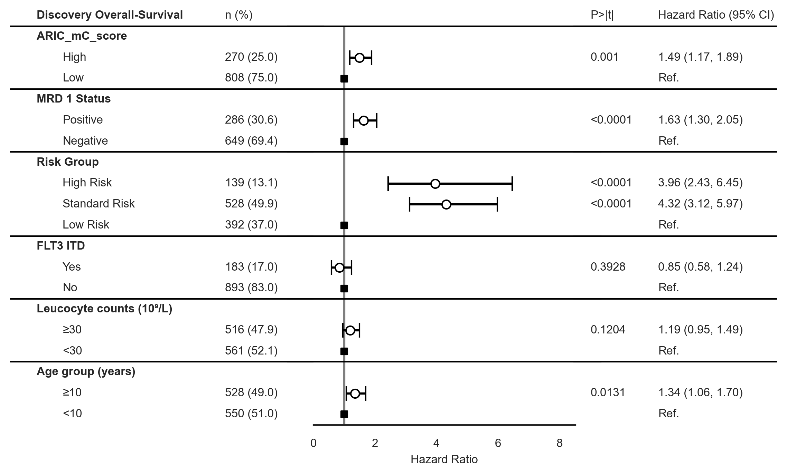
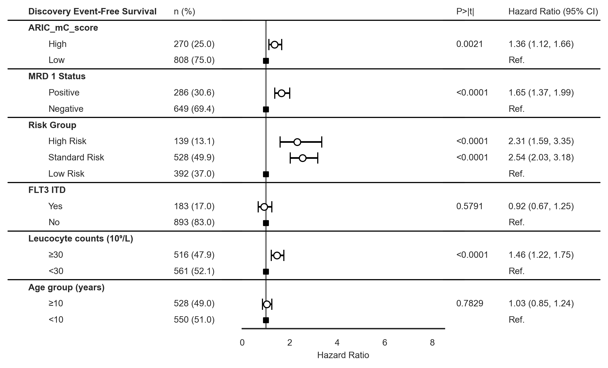
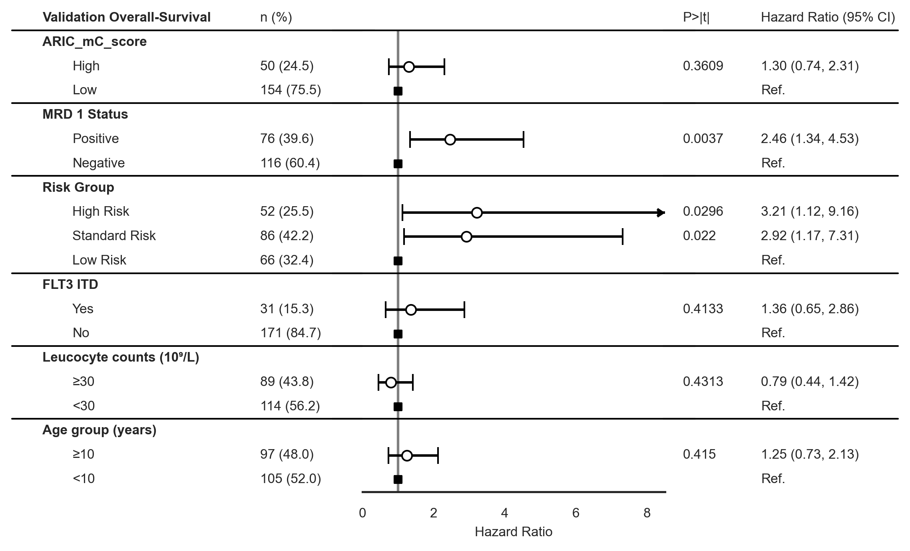
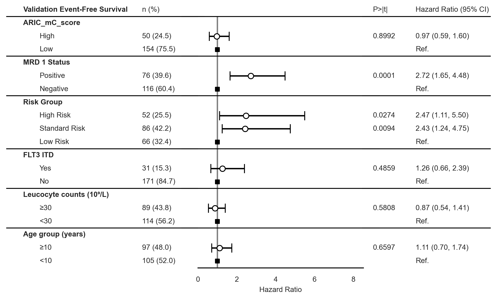

Data Visualization#
Where the data at?#
## Where the data at?
input_path = '../Data/Processed_Data/Cell_Deconvolution/'
output_path = '../Data/Processed_Data/Cell_Deconvolution/'
Which score is this?#
score_name = 'ARIC_mC_score'
Import Libraries#
import pandas as pd
import seaborn as sns
# Set theme
sns.set_theme(style='white')
# Import Plotting Functions
from FM_Functions.Data_Visualization import *
---------------------------------------------------------------------------
ModuleNotFoundError Traceback (most recent call last)
Input In [3], in <cell line: 2>()
1 import pandas as pd
----> 2 import seaborn as sns
4 # Set theme
5 sns.set_theme(style='white')
ModuleNotFoundError: No module named 'seaborn'
Load Datasets#
import pandas as pd
y_train = pd.read_csv(input_path+'y_plus_cibersortx_ARICresults_'+ score_name +'.csv', index_col=0)
y_test = pd.read_csv(input_path+'y_plus_cibersortx_ARICresults_'+ score_name +'_test.csv', index_col=0)
y_train['NK Cell Presence'] = pd.cut(x=y_train['NK'],
bins=[-np.inf, 0.001, np.inf],
labels=['NK Cells -', 'NK Cells +'])
y_test['NK Cell Presence'] = pd.cut(x=y_test['NK'],
bins=[-np.inf, 0.001, np.inf],
labels=['NK Cells -', 'NK Cells +'])
y_test['NK Cells Activated'].describe()
---------------------------------------------------------------------------
KeyError Traceback (most recent call last)
File c:\Users\flourenco\Desktop\Methylation_Project\Code\.venv_data_vizualization\lib\site-packages\pandas\core\indexes\base.py:3803, in Index.get_loc(self, key, method, tolerance)
3802 try:
-> 3803 return self._engine.get_loc(casted_key)
3804 except KeyError as err:
File c:\Users\flourenco\Desktop\Methylation_Project\Code\.venv_data_vizualization\lib\site-packages\pandas\_libs\index.pyx:138, in pandas._libs.index.IndexEngine.get_loc()
File c:\Users\flourenco\Desktop\Methylation_Project\Code\.venv_data_vizualization\lib\site-packages\pandas\_libs\index.pyx:165, in pandas._libs.index.IndexEngine.get_loc()
File pandas\_libs\hashtable_class_helper.pxi:5745, in pandas._libs.hashtable.PyObjectHashTable.get_item()
File pandas\_libs\hashtable_class_helper.pxi:5753, in pandas._libs.hashtable.PyObjectHashTable.get_item()
KeyError: 'NK Cells Activated'
The above exception was the direct cause of the following exception:
KeyError Traceback (most recent call last)
Cell In[21], line 1
----> 1 y_test['NK Cells Activated'].describe()
File c:\Users\flourenco\Desktop\Methylation_Project\Code\.venv_data_vizualization\lib\site-packages\pandas\core\frame.py:3805, in DataFrame.__getitem__(self, key)
3803 if self.columns.nlevels > 1:
3804 return self._getitem_multilevel(key)
-> 3805 indexer = self.columns.get_loc(key)
3806 if is_integer(indexer):
3807 indexer = [indexer]
File c:\Users\flourenco\Desktop\Methylation_Project\Code\.venv_data_vizualization\lib\site-packages\pandas\core\indexes\base.py:3805, in Index.get_loc(self, key, method, tolerance)
3803 return self._engine.get_loc(casted_key)
3804 except KeyError as err:
-> 3805 raise KeyError(key) from err
3806 except TypeError:
3807 # If we have a listlike key, _check_indexing_error will raise
3808 # InvalidIndexError. Otherwise we fall through and re-raise
3809 # the TypeError.
3810 self._check_indexing_error(key)
KeyError: 'NK Cells Activated'
y_train['NK'].describe()
count 1078.000000
mean 0.051793
std 0.029821
min 0.000000
25% 0.032042
50% 0.046340
75% 0.065036
max 0.287167
Name: NK, dtype: float64
y_train['NK Cell Presence'].value_counts(dropna=False)
NK Cells + 1072
NK Cells - 6
Name: NK Cell +, dtype: int64
Kaplan Meiers#
draw_kaplan_meier(scorename=score_name,
df=y_train,
save_plot=True,
add_risk_counts=False,
trialname='Discovery')
draw_kaplan_meier(scorename=score_name,
df=y_test,
save_plot=True,
add_risk_counts=False,
trialname='Validation')
c:\Users\flourenco\Desktop\Methylation_Project\Code\.venv_data_vizualization\lib\site-packages\seaborn\rcmod.py:400: DeprecationWarning: distutils Version classes are deprecated. Use packaging.version instead.
if LooseVersion(mpl.__version__) >= "3.0":
c:\Users\flourenco\Desktop\Methylation_Project\Code\.venv_data_vizualization\lib\site-packages\setuptools\_distutils\version.py:346: DeprecationWarning: distutils Version classes are deprecated. Use packaging.version instead.
other = LooseVersion(other)
c:\Users\flourenco\Desktop\Methylation_Project\Code\.venv_data_vizualization\lib\site-packages\seaborn\rcmod.py:400: DeprecationWarning: distutils Version classes are deprecated. Use packaging.version instead.
if LooseVersion(mpl.__version__) >= "3.0":
c:\Users\flourenco\Desktop\Methylation_Project\Code\.venv_data_vizualization\lib\site-packages\setuptools\_distutils\version.py:346: DeprecationWarning: distutils Version classes are deprecated. Use packaging.version instead.
other = LooseVersion(other)
Forest Plots#
draw_forest_plot(time='os.time',
event='os.evnt',
df=y_train,
trialname='Discovery',
scorename=score_name,
save_plot=False)
draw_forest_plot(time='efs.time',
event='efs.evnt',
df=y_train,
trialname='Discovery',
scorename=score_name,
save_plot=False)


draw_forest_plot(time='os.time',
event='os.evnt',
df=y_test,
trialname='Validation',
scorename=score_name,
save_plot=True)
draw_forest_plot(time='efs.time',
event='efs.evnt',
df=y_test,
trialname='Validation',
scorename=score_name,
save_plot=True)


Patient Characteristics Table#
from tableone import TableOne
df_all = pd.concat([y_train,y_test], join='outer',keys=['StJude (Discovery)','COG (Validation)']).reset_index(level=0, names='cohort')
columns = ['Age (years)','Age group (years)','Sex','Race or ethnic group',
'Hispanic or Latino ethnic group', 'MRD 1 Status',
'Vital Status', 'Leucocyte counts (10⁹/L)',
'Risk Group','FLT3 ITD']
mytable_all = TableOne(df_all, columns,overall=False,missing=False,pval=False,
order={'FLT3 ITD':['Yes','No'],
'Race or ethnic group':['White','Black or African American','Asian'],
'MRD 1 Status': ['Positive'],
'Risk Group': ['High Risk', 'Standard Risk'],
'FLT3 ITD': ['Yes'],
'Leucocyte counts (10⁹/L)': ['≥30'],
'Age group (years)': ['≥10']},
groupby='cohort')
mytable_all.tabulate(tablefmt="html", headers=[score_name,"",'COG (Validation)','StJude (Discovery)'])
| ARIC_mC_score | COG (Validation) | StJude (Discovery) | |
|---|---|---|---|
| n | 204 | 1078 | |
| Age (years), mean (SD) | 8.8 (6.0) | 9.4 (6.4) | |
| Age group (years), n (%) | ≥10 | 97 (48.0) | 528 (49.0) |
| <10 | 105 (52.0) | 550 (51.0) | |
| Sex, n (%) | Female | 86 (42.2) | 538 (49.9) |
| Male | 118 (57.8) | 540 (50.1) | |
| Race or ethnic group, n (%) | White | 143 (70.8) | 796 (79.5) |
| Black or African American | 35 (17.3) | 117 (11.7) | |
| Asian | 1 (0.5) | 49 (4.9) | |
| Native Hawaiian or other Pacific Islander | 2 (1.0) | 6 (0.6) | |
| Other | 21 (10.4) | 28 (2.8) | |
| American Indian or Alaska Native | 5 (0.5) | ||
| Hispanic or Latino ethnic group, n (%) | Hispanic or Latino | 25 (12.4) | 203 (19.4) |
| Not Hispanic or Latino | 177 (87.6) | 843 (80.6) | |
| MRD 1 Status, n (%) | Positive | 76 (39.6) | 286 (30.6) |
| Negative | 116 (60.4) | 649 (69.4) | |
| Vital Status, n (%) | Alive | 143 (70.1) | 687 (63.7) |
| Dead | 61 (29.9) | 391 (36.3) | |
| Leucocyte counts (10⁹/L), n (%) | ≥30 | 89 (43.8) | 516 (47.9) |
| <30 | 114 (56.2) | 561 (52.1) | |
| Risk Group, n (%) | High Risk | 52 (25.5) | 139 (13.1) |
| Standard Risk | 86 (42.2) | 528 (49.9) | |
| Low Risk | 66 (32.4) | 392 (37.0) | |
| FLT3 ITD, n (%) | Yes | 31 (15.3) | 183 (17.0) |
| No | 171 (84.7) | 893 (83.0) |
columns2 = ['Age (years)','Age group (years)','Sex','Race or ethnic group',
'Hispanic or Latino ethnic group', 'MRD 1 Status',
'Leucocyte counts (10⁹/L)', 'BM Leukemic blasts (%)',
'Risk Group', 'Clinical Trial','FLT3 ITD']
mytable_cog = TableOne(y_test, columns2,
overall=False, missing=True,
pval=True, pval_adjust=False,
htest_name=True,dip_test=True,
tukey_test=True, normal_test=True,
order={'FLT3 ITD':['Yes','No'],
'Race or ethnic group':['White','Black or African American','Asian'],
'MRD 1 Status': ['Positive'],
'Risk Group': ['High Risk', 'Standard Risk'],
'FLT3 ITD': ['Yes'],
'Leucocyte counts (10⁹/L)': ['≥30'],
'Age group (years)': ['≥10']},
groupby=score_name + ' Categorical')
mytable_cog.tabulate(tablefmt="html",
headers=[score_name,"",'Missing','High','Low','p-value','Statistical Test'])
| ARIC_mC_score | Missing | High | Low | p-value | Statistical Test | |
|---|---|---|---|---|---|---|
| n | 50 | 154 | ||||
| Age (years), mean (SD) | 2 | 10.2 (6.4) | 8.3 (5.8) | 0.062 | Two Sample T-test | |
| Age group (years), n (%) | ≥10 | 2 | 29 (59.2) | 68 (44.4) | 0.102 | Chi-squared |
| <10 | 20 (40.8) | 85 (55.6) | ||||
| Sex, n (%) | Female | 0 | 22 (44.0) | 64 (41.6) | 0.889 | Chi-squared |
| Male | 28 (56.0) | 90 (58.4) | ||||
| Race or ethnic group, n (%) | White | 2 | 31 (62.0) | 112 (73.7) | 0.192 | Chi-squared (warning: expected count < 5) |
| Black or African American | 11 (22.0) | 24 (15.8) | ||||
| Asian | 1 (2.0) | |||||
| Other | 7 (14.0) | 14 (9.2) | ||||
| Native Hawaiian or other Pacific Islander | 2 (1.3) | |||||
| Hispanic or Latino ethnic group, n (%) | Hispanic or Latino | 2 | 5 (10.4) | 20 (13.0) | 0.825 | Chi-squared |
| Not Hispanic or Latino | 43 (89.6) | 134 (87.0) | ||||
| MRD 1 Status, n (%) | Positive | 12 | 28 (59.6) | 48 (33.1) | 0.002 | Chi-squared |
| Negative | 19 (40.4) | 97 (66.9) | ||||
| Leucocyte counts (10⁹/L), n (%) | ≥30 | 1 | 27 (54.0) | 62 (40.5) | 0.133 | Chi-squared |
| <30 | 23 (46.0) | 91 (59.5) | ||||
| BM Leukemic blasts (%), mean (SD) | 16 | -374.3 (2074.5) | -153.9 (1451.2) | 0.506 | Two Sample T-test | |
| Risk Group, n (%) | High Risk | 0 | 17 (34.0) | 35 (22.7) | 0.036 | Chi-squared |
| Standard Risk | 24 (48.0) | 62 (40.3) | ||||
| Low Risk | 9 (18.0) | 57 (37.0) | ||||
| Clinical Trial, n (%) | AML02 | 0 | 37 (74.0) | 125 (81.2) | 0.375 | Chi-squared |
| AML08 | 13 (26.0) | 29 (18.8) | ||||
| FLT3 ITD, n (%) | Yes | 2 | 12 (24.0) | 19 (12.5) | 0.083 | Chi-squared |
| No | 38 (76.0) | 133 (87.5) |
columns3 = ['Age (years)','Age group (years)','Sex','Race or ethnic group',
'Hispanic or Latino ethnic group', 'MRD 1 Status',
'Leucocyte counts (10⁹/L)', 'BM Leukemic blasts (%)',
'Risk Group','FLT3 ITD',
'Treatment Arm']
mytable_aml02 = TableOne(y_train, columns3,
overall=False, missing=True,
pval=True, pval_adjust=False,
htest_name=True,dip_test=True,
tukey_test=True, normal_test=True,
order={'FLT3 ITD':['Yes','No'],
'Race or ethnic group':['White','Black or African American','Asian'],
'MRD 1 Status': ['Positive'],
'Risk Group': ['High Risk', 'Standard Risk'],
'FLT3 ITD': ['Yes'],
'Leucocyte counts (10⁹/L)': ['≥30'],
'Age group (years)': ['≥10']},
groupby= score_name + ' Categorical')
mytable_aml02.tabulate(tablefmt="html",
headers=[score_name,"",'Missing','High','Low','p-value','Statistical Test'])
| ARIC_mC_score | Missing | High | Low | p-value | Statistical Test | |
|---|---|---|---|---|---|---|
| n | 270 | 808 | ||||
| Age (years), mean (SD) | 0 | 10.9 (6.1) | 8.9 (6.4) | <0.001 | Two Sample T-test | |
| Age group (years), n (%) | ≥10 | 0 | 166 (61.5) | 362 (44.8) | <0.001 | Chi-squared |
| <10 | 104 (38.5) | 446 (55.2) | ||||
| Sex, n (%) | Female | 0 | 137 (50.7) | 401 (49.6) | 0.806 | Chi-squared |
| Male | 133 (49.3) | 407 (50.4) | ||||
| Race or ethnic group, n (%) | White | 77 | 205 (81.7) | 591 (78.8) | 0.120 | Chi-squared (warning: expected count < 5) |
| Black or African American | 30 (12.0) | 87 (11.6) | ||||
| Asian | 8 (3.2) | 41 (5.5) | ||||
| American Indian or Alaska Native | 3 (1.2) | 2 (0.3) | ||||
| Native Hawaiian or other Pacific Islander | 2 (0.8) | 4 (0.5) | ||||
| Other | 3 (1.2) | 25 (3.3) | ||||
| Hispanic or Latino ethnic group, n (%) | Hispanic or Latino | 32 | 55 (20.8) | 148 (18.9) | 0.557 | Chi-squared |
| Not Hispanic or Latino | 209 (79.2) | 634 (81.1) | ||||
| MRD 1 Status, n (%) | Positive | 143 | 85 (37.4) | 201 (28.4) | 0.013 | Chi-squared |
| Negative | 142 (62.6) | 507 (71.6) | ||||
| Leucocyte counts (10⁹/L), n (%) | ≥30 | 1 | 133 (49.3) | 383 (47.5) | 0.658 | Chi-squared |
| <30 | 137 (50.7) | 424 (52.5) | ||||
| BM Leukemic blasts (%), mean (SD) | 76 | 68.1 (22.8) | 61.8 (25.0) | <0.001 | Two Sample T-test | |
| Risk Group, n (%) | High Risk | 19 | 49 (18.5) | 90 (11.3) | 0.002 | Chi-squared |
| Standard Risk | 136 (51.3) | 392 (49.4) | ||||
| Low Risk | 80 (30.2) | 312 (39.3) | ||||
| FLT3 ITD, n (%) | Yes | 2 | 53 (19.6) | 130 (16.1) | 0.218 | Chi-squared |
| No | 217 (80.4) | 676 (83.9) | ||||
| Treatment Arm, n (%) | Arm A | 535 | 65 (46.1) | 193 (48.0) | 0.770 | Chi-squared |
| Arm B | 76 (53.9) | 209 (52.0) |
Bar Plots#
import numpy as np
# Set up the matplotlib figure
sns.set_theme(style='white')
f, axs = plt.subplots(2, 1, sharex=True, figsize=(8,7))
# Define plots
sns.histplot(data=y_train,x=score_name, hue=score_name + ' Categorical', ax=axs[0], bins=75)
sns.histplot(data=y_test,x=score_name, hue=score_name + ' Categorical', ax=axs[1], bins=50)
# Set specs
cutoff = np.quantile(y_train[score_name],0.75)
for i in range(2):
axs[i].axvline(cutoff, linestyle="dotted",color='red', label='Discovery 3ʳᵈ Quartile ('+ round(cutoff,3).astype(str)+ ')')
axs[0].set_title(' Discovery', loc='center', pad=5, fontsize=11)
axs[1].set_title(' Validation', loc='center', pad=5, fontsize=11)
axs[1].legend()
# Define Plot Specs
plt.subplots_adjust(wspace=0, hspace=0.1)
plt.suptitle(score_name + ' Classifier Strategy: Discovery 3ʳᵈ Quartile ('+ round(cutoff,3).astype(str)+ ')',
fontsize='medium', y=0.95,
fontweight='bold')
plt.savefig('../Figures/Bar_Plots/'+score_name+'_Classifier_Strategy.png',
bbox_inches='tight', dpi=300)
plt.show()
c:\Users\flourenco\Desktop\Methylation_Project\Code\.venv_data_vizualization\lib\site-packages\seaborn\rcmod.py:400: DeprecationWarning: distutils Version classes are deprecated. Use packaging.version instead.
if LooseVersion(mpl.__version__) >= "3.0":
c:\Users\flourenco\Desktop\Methylation_Project\Code\.venv_data_vizualization\lib\site-packages\setuptools\_distutils\version.py:346: DeprecationWarning: distutils Version classes are deprecated. Use packaging.version instead.
other = LooseVersion(other)
Box Plots#
draw_boxplot(df=y_train,x='Risk Group', y=score_name,
order=['High Risk', 'Standard Risk', 'Low Risk'],
trialname='Discovery', hue=score_name +' Categorical',
save_plot=True, figsize=None)
draw_boxplot(df=y_test,x='Risk Group', y=score_name,
order=['High Risk', 'Standard Risk', 'Low Risk'],
trialname='Validation', hue=score_name + ' Categorical',
save_plot=True, figsize=None)
c:\Users\flourenco\Desktop\Methylation_Project\Code\.venv_data_vizualization\lib\site-packages\seaborn\rcmod.py:400: DeprecationWarning: distutils Version classes are deprecated. Use packaging.version instead.
if LooseVersion(mpl.__version__) >= "3.0":
c:\Users\flourenco\Desktop\Methylation_Project\Code\.venv_data_vizualization\lib\site-packages\setuptools\_distutils\version.py:346: DeprecationWarning: distutils Version classes are deprecated. Use packaging.version instead.
other = LooseVersion(other)
c:\Users\flourenco\Desktop\Methylation_Project\Code\.venv_data_vizualization\lib\site-packages\seaborn\categorical.py:381: DeprecationWarning: distutils Version classes are deprecated. Use packaging.version instead.
if LooseVersion(mpl.__version__) < "3.0":
c:\Users\flourenco\Desktop\Methylation_Project\Code\.venv_data_vizualization\lib\site-packages\setuptools\_distutils\version.py:346: DeprecationWarning: distutils Version classes are deprecated. Use packaging.version instead.
other = LooseVersion(other)
p-value annotation legend:
ns: p <= 1.00e+00
*: 1.00e-02 < p <= 5.00e-02
**: 1.00e-03 < p <= 1.00e-02
***: 1.00e-04 < p <= 1.00e-03
****: p <= 1.00e-04
High Risk vs. Standard Risk: Kruskal-Wallis independent samples (pairwise between groups) with Bonferroni correction, P_val:5.267e-03 Stat=9.789e+00
Standard Risk vs. Low Risk: Kruskal-Wallis independent samples (pairwise between groups) with Bonferroni correction, P_val:1.000e+00 Stat=2.191e-04
High Risk vs. Low Risk: Kruskal-Wallis independent samples (pairwise between groups) with Bonferroni correction, P_val:2.802e-03 Stat=1.095e+01
c:\Users\flourenco\Desktop\Methylation_Project\Code\.venv_data_vizualization\lib\site-packages\seaborn\rcmod.py:400: DeprecationWarning: distutils Version classes are deprecated. Use packaging.version instead.
if LooseVersion(mpl.__version__) >= "3.0":
c:\Users\flourenco\Desktop\Methylation_Project\Code\.venv_data_vizualization\lib\site-packages\setuptools\_distutils\version.py:346: DeprecationWarning: distutils Version classes are deprecated. Use packaging.version instead.
other = LooseVersion(other)
c:\Users\flourenco\Desktop\Methylation_Project\Code\.venv_data_vizualization\lib\site-packages\seaborn\categorical.py:381: DeprecationWarning: distutils Version classes are deprecated. Use packaging.version instead.
if LooseVersion(mpl.__version__) < "3.0":
c:\Users\flourenco\Desktop\Methylation_Project\Code\.venv_data_vizualization\lib\site-packages\setuptools\_distutils\version.py:346: DeprecationWarning: distutils Version classes are deprecated. Use packaging.version instead.
other = LooseVersion(other)
p-value annotation legend:
ns: p <= 1.00e+00
*: 1.00e-02 < p <= 5.00e-02
**: 1.00e-03 < p <= 1.00e-02
***: 1.00e-04 < p <= 1.00e-03
****: p <= 1.00e-04
High Risk vs. Standard Risk: Kruskal-Wallis independent samples (pairwise between groups) with Bonferroni correction, P_val:1.000e+00 Stat=3.518e-01
Standard Risk vs. Low Risk: Kruskal-Wallis independent samples (pairwise between groups) with Bonferroni correction, P_val:2.056e-01 Stat=3.318e+00
High Risk vs. Low Risk: Kruskal-Wallis independent samples (pairwise between groups) with Bonferroni correction, P_val:2.032e-01 Stat=3.337e+00
draw_boxplot(df=y_train,x='MRD 1 Status', y=score_name,
order=['Positive','Negative'],
trialname='Discovery', hue=score_name + ' Categorical',
save_plot=True, figsize=None)
draw_boxplot(df=y_test,x='MRD 1 Status', y=score_name,
order=['Positive','Negative'],
trialname='Validation', hue=score_name + ' Categorical',
save_plot=True, figsize=None)
c:\Users\flourenco\Desktop\Methylation_Project\Code\.venv_data_vizualization\lib\site-packages\seaborn\rcmod.py:400: DeprecationWarning: distutils Version classes are deprecated. Use packaging.version instead.
if LooseVersion(mpl.__version__) >= "3.0":
c:\Users\flourenco\Desktop\Methylation_Project\Code\.venv_data_vizualization\lib\site-packages\setuptools\_distutils\version.py:346: DeprecationWarning: distutils Version classes are deprecated. Use packaging.version instead.
other = LooseVersion(other)
c:\Users\flourenco\Desktop\Methylation_Project\Code\.venv_data_vizualization\lib\site-packages\seaborn\categorical.py:381: DeprecationWarning: distutils Version classes are deprecated. Use packaging.version instead.
if LooseVersion(mpl.__version__) < "3.0":
c:\Users\flourenco\Desktop\Methylation_Project\Code\.venv_data_vizualization\lib\site-packages\setuptools\_distutils\version.py:346: DeprecationWarning: distutils Version classes are deprecated. Use packaging.version instead.
other = LooseVersion(other)
p-value annotation legend:
ns: p <= 1.00e+00
*: 1.00e-02 < p <= 5.00e-02
**: 1.00e-03 < p <= 1.00e-02
***: 1.00e-04 < p <= 1.00e-03
****: p <= 1.00e-04
Positive vs. Negative: Kruskal-Wallis independent samples (pairwise between groups) with Bonferroni correction, P_val:1.449e-02 Stat=5.978e+00
c:\Users\flourenco\Desktop\Methylation_Project\Code\.venv_data_vizualization\lib\site-packages\seaborn\rcmod.py:400: DeprecationWarning: distutils Version classes are deprecated. Use packaging.version instead.
if LooseVersion(mpl.__version__) >= "3.0":
c:\Users\flourenco\Desktop\Methylation_Project\Code\.venv_data_vizualization\lib\site-packages\setuptools\_distutils\version.py:346: DeprecationWarning: distutils Version classes are deprecated. Use packaging.version instead.
other = LooseVersion(other)
c:\Users\flourenco\Desktop\Methylation_Project\Code\.venv_data_vizualization\lib\site-packages\seaborn\categorical.py:381: DeprecationWarning: distutils Version classes are deprecated. Use packaging.version instead.
if LooseVersion(mpl.__version__) < "3.0":
c:\Users\flourenco\Desktop\Methylation_Project\Code\.venv_data_vizualization\lib\site-packages\setuptools\_distutils\version.py:346: DeprecationWarning: distutils Version classes are deprecated. Use packaging.version instead.
other = LooseVersion(other)
p-value annotation legend:
ns: p <= 1.00e+00
*: 1.00e-02 < p <= 5.00e-02
**: 1.00e-03 < p <= 1.00e-02
***: 1.00e-04 < p <= 1.00e-03
****: p <= 1.00e-04
Positive vs. Negative: Kruskal-Wallis independent samples (pairwise between groups) with Bonferroni correction, P_val:6.231e-03 Stat=7.482e+00
draw_boxplot(df=y_train,x='Primary Cytogenetic Code', y=score_name,
order='auto',
trialname='Discovery', hue=score_name + ' Categorical',
save_plot=True, figsize=None)
draw_boxplot(df=y_test,x='Primary Cytogenetic Code', y=score_name,
order='auto',
trialname='Validation', hue=score_name + ' Categorical',
save_plot=True, figsize=None)
c:\Users\flourenco\Desktop\Methylation_Project\Code\.venv_data_vizualization\lib\site-packages\seaborn\rcmod.py:400: DeprecationWarning: distutils Version classes are deprecated. Use packaging.version instead.
if LooseVersion(mpl.__version__) >= "3.0":
c:\Users\flourenco\Desktop\Methylation_Project\Code\.venv_data_vizualization\lib\site-packages\setuptools\_distutils\version.py:346: DeprecationWarning: distutils Version classes are deprecated. Use packaging.version instead.
other = LooseVersion(other)
c:\Users\flourenco\Desktop\Methylation_Project\Code\.venv_data_vizualization\lib\site-packages\seaborn\categorical.py:381: DeprecationWarning: distutils Version classes are deprecated. Use packaging.version instead.
if LooseVersion(mpl.__version__) < "3.0":
c:\Users\flourenco\Desktop\Methylation_Project\Code\.venv_data_vizualization\lib\site-packages\setuptools\_distutils\version.py:346: DeprecationWarning: distutils Version classes are deprecated. Use packaging.version instead.
other = LooseVersion(other)
c:\Users\flourenco\Desktop\Methylation_Project\Code\.venv_data_vizualization\lib\site-packages\seaborn\rcmod.py:400: DeprecationWarning: distutils Version classes are deprecated. Use packaging.version instead.
if LooseVersion(mpl.__version__) >= "3.0":
c:\Users\flourenco\Desktop\Methylation_Project\Code\.venv_data_vizualization\lib\site-packages\setuptools\_distutils\version.py:346: DeprecationWarning: distutils Version classes are deprecated. Use packaging.version instead.
other = LooseVersion(other)
c:\Users\flourenco\Desktop\Methylation_Project\Code\.venv_data_vizualization\lib\site-packages\seaborn\categorical.py:381: DeprecationWarning: distutils Version classes are deprecated. Use packaging.version instead.
if LooseVersion(mpl.__version__) < "3.0":
c:\Users\flourenco\Desktop\Methylation_Project\Code\.venv_data_vizualization\lib\site-packages\setuptools\_distutils\version.py:346: DeprecationWarning: distutils Version classes are deprecated. Use packaging.version instead.
other = LooseVersion(other)